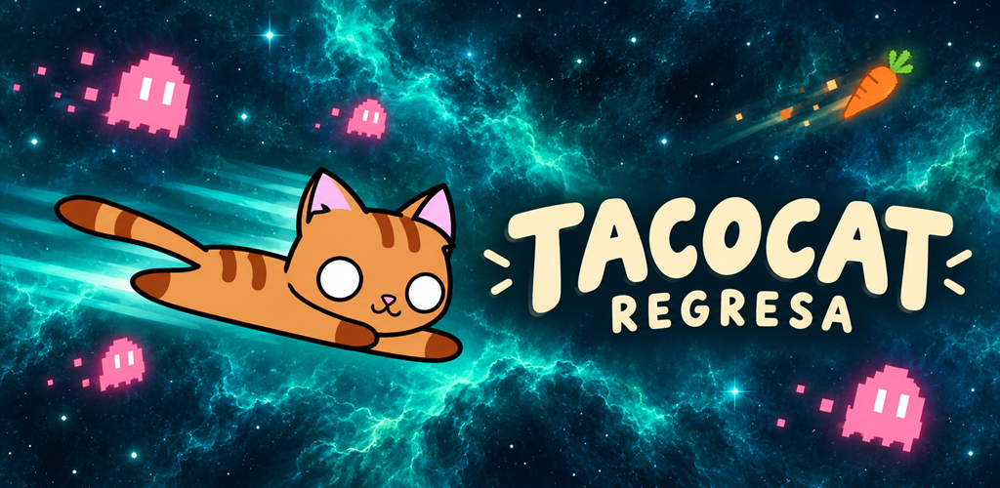

Un gato. Mucho espacio.
Tacocat regresa
Vuela, esquiva fantasmas y comida espacial, recoge zanahorias y supera tu puntuación.
Tacocat regresa es un juego de That Mexican Game Company, también conocido anteriormente como Cosmicat. Toca la pantalla para mantener al gato en vuelo y conserva tus tres corazones.
Información y soporte
Consulta cómo se guardan los logros y cómo funcionan los anuncios opcionales para revivir.
Política de privacidadEscribir a soporte